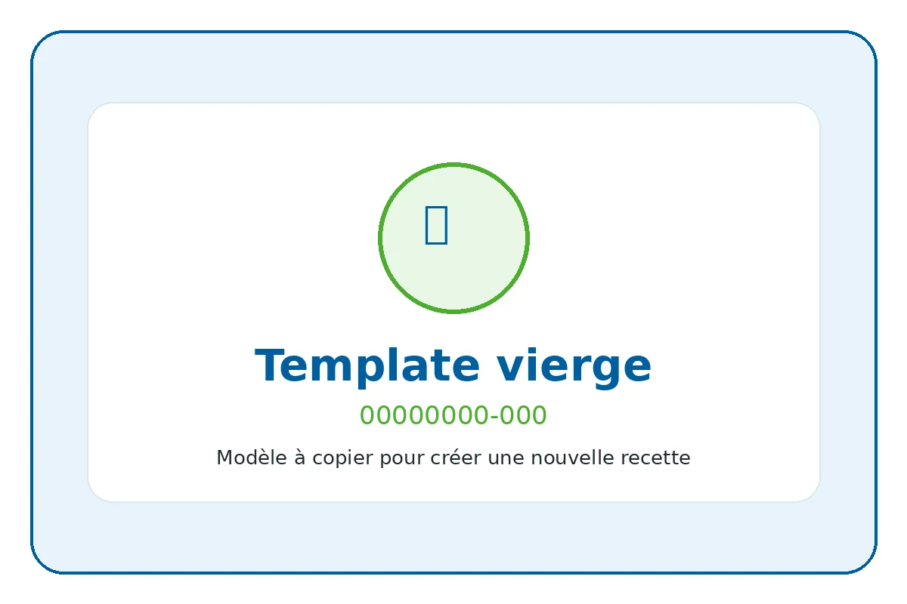

ID recette : 00000000-000
Template vierge de recette
Modèle vierge à copier pour créer une nouvelle fiche recette.
Cette fiche est un modèle technique. Elle sert de base pour créer une nouvelle recette complète.

⚖️ Adapter les quantités
Le calcul adapte les quantités proportionnellement.
🧺 Ingrédients avec quantités
Principaux
- 0 g — Ingrédient principal à compléter
Secondaires
- 0 g — Ingrédient secondaire à compléter
Optionnels
- 0 g — Ingrédient optionnel à compléter
👩🍳 Préparation détaillée
- Étape 1 à compléter.
- Étape 2 à compléter.
- Étape 3 à compléter.
💡 Astuce anti-gaspi
Astuce anti-gaspi à compléter.
🔁 Variantes possibles
Variantes possibles à compléter.
⚠️ Allergènes et conservation
Allergènes : À vérifier selon les produits utilisés
Conservation : À compléter.
Réchauffage : À compléter.
Vérifiez toujours les étiquettes des produits utilisés.
🔎 Filtres associés
Cliquez sur un bouton pour trouver les recettes associées au même champ.
Sous-catégorie : Modele
📱 QR code
QR code vers la fiche en ligne.
https://recettesducoeur.github.io/recettes/00000000-000.html
Sur mobile/tablette, seul le téléchargement PDF est proposé. Sur PC, l’impression conserve les quantités sélectionnées.